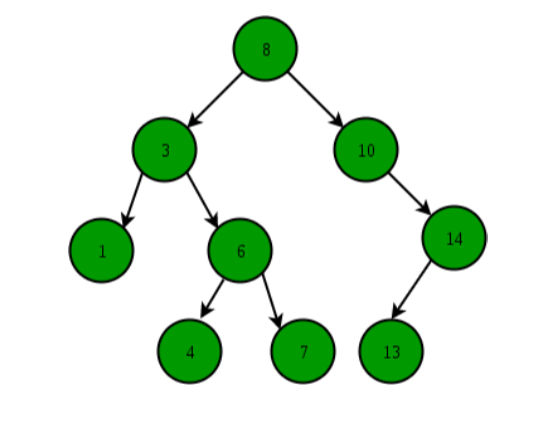
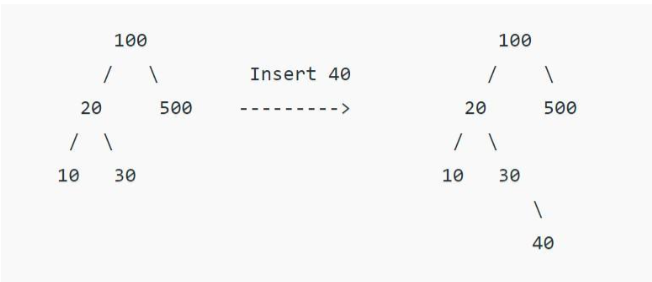
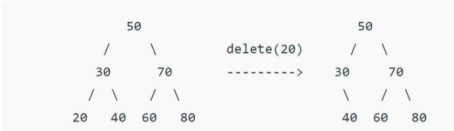
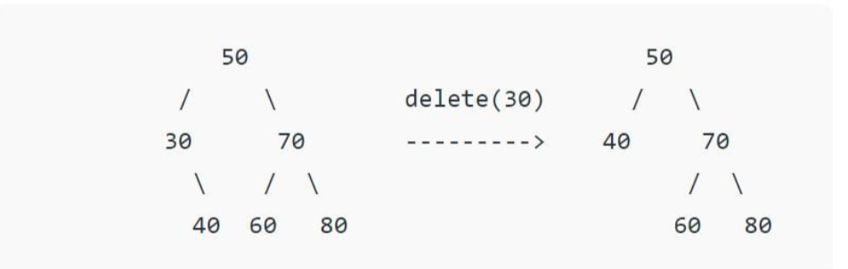
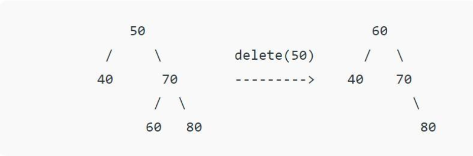

Aim:
Theory:
- The left subtree of a node contains only nodes with keys lesser than the node's key.
- The right subtree of a node contains only nodes with keys greater than the node's key.
- The left and right subtree each must also be a binary search tree.

Operations on Binary Tree
- Start from the root.
- Compare the searching element with root, if less than root, then recurse for left, else recurse for right.
- If the element to search is found anywhere, return true, else return false.
A new key is always inserted at the leaf. We start searching a key from the root until we hit a leaf node. Once a leaf node is found, the new node is added as a child of the leaf node.

When we delete a node, three possibilities arise.
- Node to be deleted is the leaf: Simply remove from the tree.

- Node to be deleted has only one child: Copy the child to the node and delete the child

- Node to be deleted has two children: Find inorder successor of the node. Copy
contents of the inorder successor to the node and delete the inorder successor. Note
that inorder predecessor can also be used.

The important thing to note is, inorder successor is needed only when the right child is not empty. In this particular case, inorder successor can be obtained by finding the minimum value in the right child of the node.
Simulation:
Quiz:
Feedback: